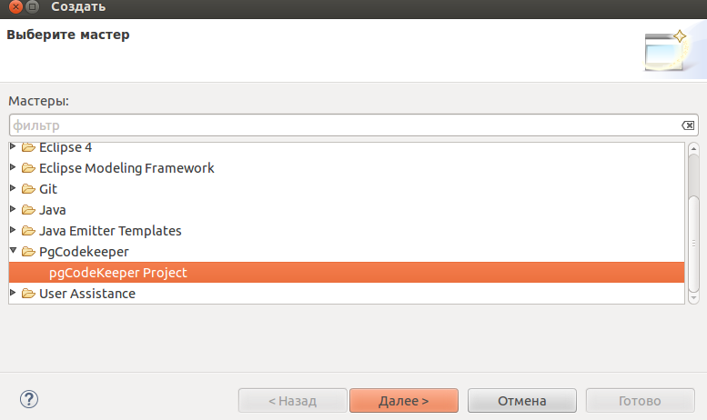

Мастер создания нового проекта pgCodeKeeper
Мастер создания нового проекта pgCodekeeper позволит Вам создать проект из различных источников:
существующий GIT репозиторий
файл файл сформированный pg_dump'ом
база данных
